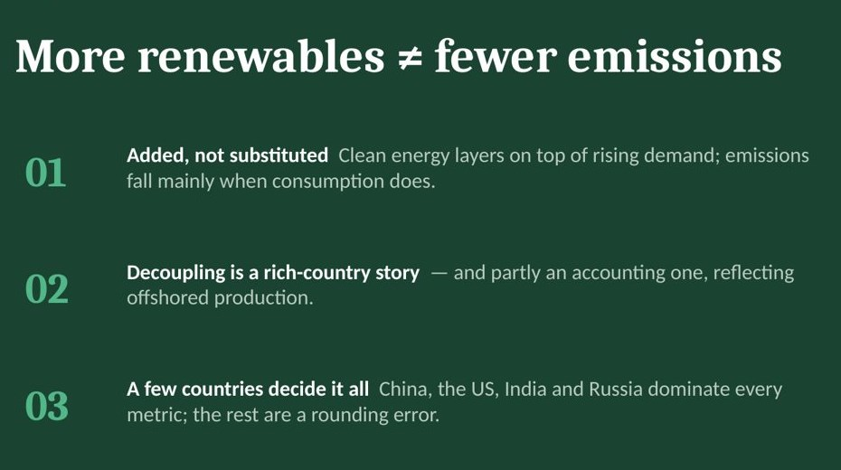

Data analysis
Is Decoupling Real?
A study of the world's 15 largest economies from 2000–2022, testing whether rising renewable energy actually brought CO₂ emissions down — or just stacked clean power on top of growing demand. Two Our World in Data datasets joined and cleaned in BigQuery, then analyzed and visualized. Capstone of the Google Data Analytics Professional Certificate.
What it foundMore renewables ≠ fewer emissions. Clean energy was added, not substituted; decoupling is mostly a rich-country story, and partly an accounting one.
View the analysis →Companion video
Renewables are rising — so why aren’t global emissions falling?
A short walk-through of the question behind the study and what the data actually shows.
Loads from YouTube on click · fullscreen available